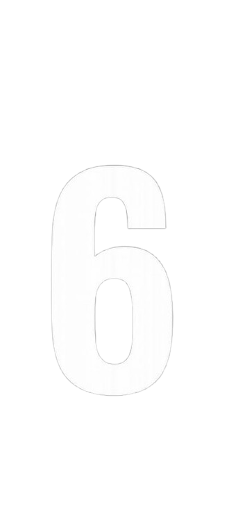
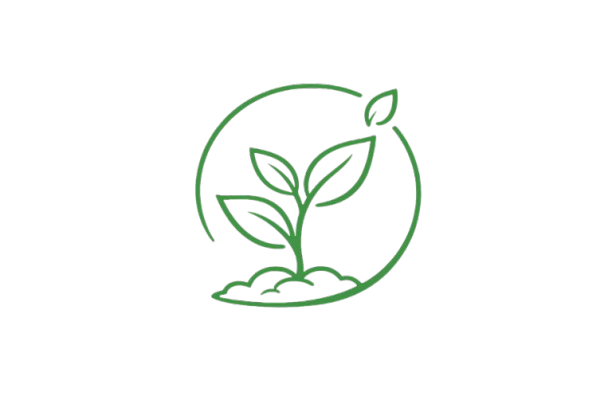

Nosso projeto contribui diretamente para um futuro mais sustentável através da gestão da água e da Geraçãode energia limpa




A EcoHidro integra tecnologia, natureza e eficiência para construir um futuro limpo sustentável e consciente.